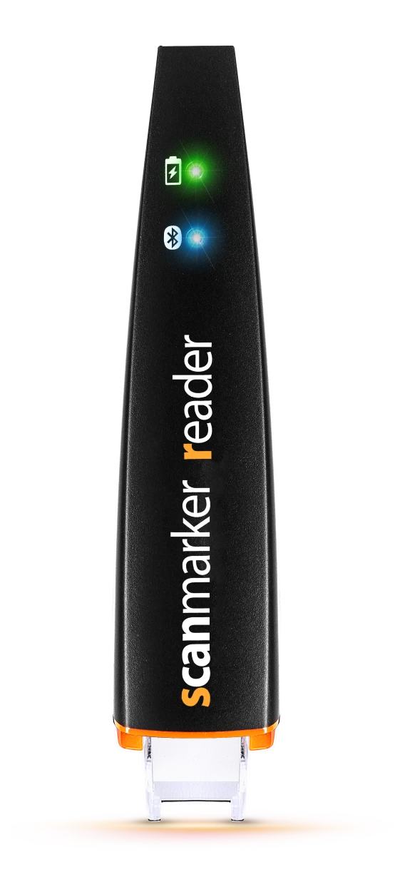

In the business industry, we see lots of people use many types of technology to make money and meet their goals. There are key technologies that are commonly used worldwide, such as computers as it lets people store and organize significant information, and use programs to make their work a lot faster. Additionally, mobile devices are also really good because they let people communicate with each other and check up on them if they need help.

Asheno is a gadget that has built in AI in a pen shaped form.
Universe is an app that helps other people in their age group collabrate and work on homework together.